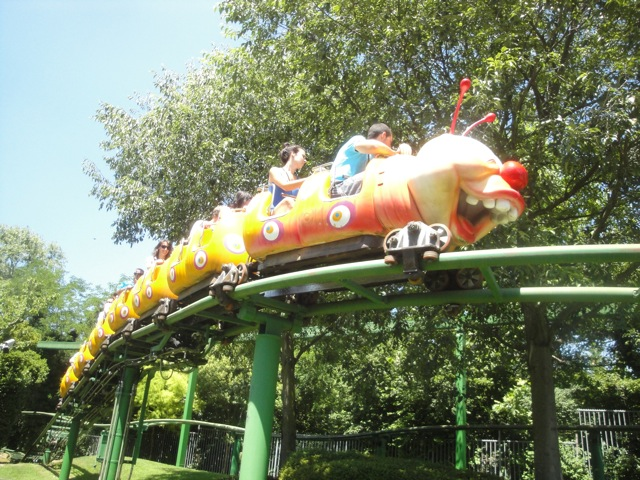

| |
Ortobruco Tour Review

Once you get in the seat, you pull down the lap bar, and away you go! This is the park's kiddy coaster, and it sometimes gets called a Wacky Worm since it has the same cars as a Wacky Worm, but it's not. It's a better ride. Wait, why the hell am I analyzing a stupid kiddy coaster this much!? We go up the tiny lifthill and around a turn before coming over these really tiny bumps. Ok, I can understand the confusion since this part of the ride is really Wacky Worm like. We go down a tiny little drop, around a turn that's surrounded by this hedge wall. Hey, it's kind of like being in a hedge maze. We then go up a lifthill smaller than me (really) that leads into a downward helix to the ground that just leads to another smaller than me lifthill, that leads to a turn into another lifthill. Ok, this ride is really awkwardly designed. I'm not sure what the hell is up with this. But anyways, we go around a turn, down this small litle drop and up this incline slope that leads us straight into a helix to the ground. Whee I guess. We then go up another hill...that's too big, so they turned it into a lifthill. OK, this ride was officially made in RCT. Hell, I've made better coasters in RCT. Not saying that because I'd make a thrill ride, but because I'm familiar with the concept of friction. Anyways, this leads to another helix to the ground. Yeah, I see the pattern in this ride. We go into another hill that needed a lift boost, around a turn, down a little dip, around a turn, and into the station. It's an awkward kiddy coaster and should only be ridden for the credit.
2/10
Location: Gardaland
Opened: 1993
Built by: Pinfari
Last Ridden: June 22, 2012
Ortobruco Tour Review


Home
|